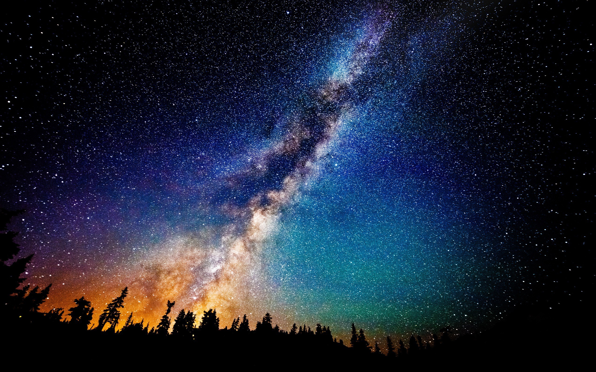

The Milky Way Galaxy
The Milky Way is the galaxy that contains our solar system. It is a vast collection of billions of stars, planets, gas, and dust held together by gravity. From Earth, it appears as a faint band of light stretching across the night sky.
Our solar system is located in one of the spiral arms of the Milky Way, far from its centre. At the centre of the galaxy lies a supermassive black hole.
However, the Milky Way is not the only galaxy in the universe. Scientists believe there are billions of galaxies, each containing their own stars and planetary systems.

Watch the Solar System
This video explains the solar system and helps introduce the planets.
Our Solar System
Inside the Milky Way, our solar system is made up of the Sun and the planets that orbit around it. Each planet is unique and has different characteristics.
- Mercury: The closest planet to the Sun.
- Venus: The hottest planet with a thick atmosphere.
- Earth: The only known planet to support life.
- Mars: Known as the Red Planet.
- Jupiter: The largest planet in the solar system.
- Saturn: Famous for its rings.
- Uranus: An ice giant that rotates on its side.
- Neptune: The farthest planet from the Sun.
Use the navigation menu above to explore each planet in more detail.